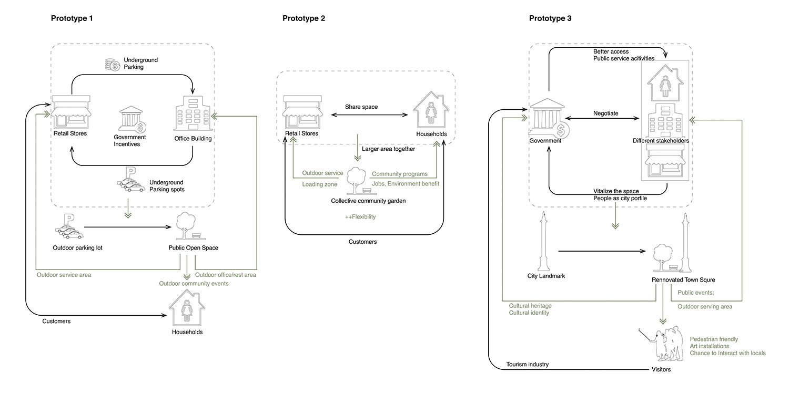
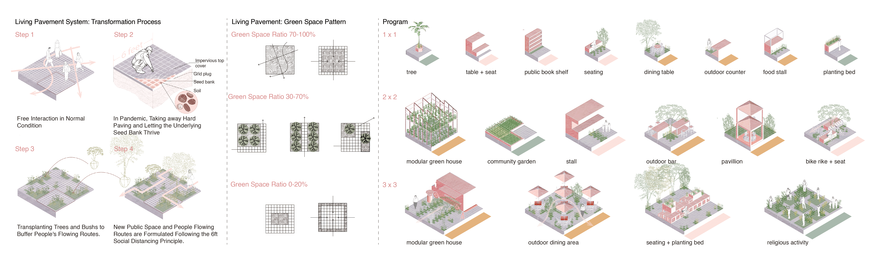
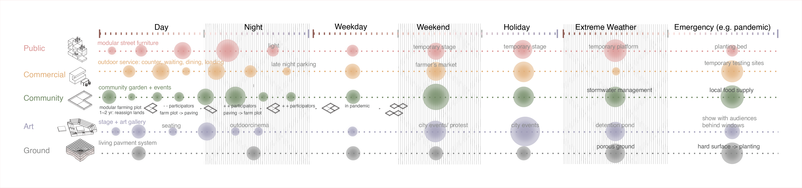
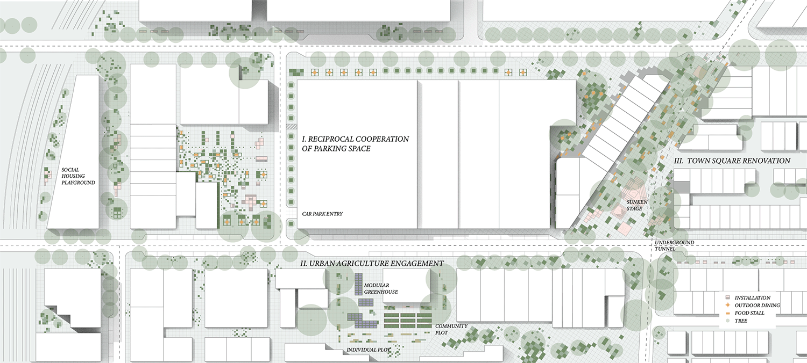

LIVING GROUND
Redefine Six-feet Distancing
Group Project
2020
World Landscape Architecture Student Ideas Competition, Runner up
Team Members: Esther Xie, Xi (Echo) Chen, Sufeng (Sophia) Xiao, Siqi (Joyce) Zhu
Role in Team: conceptual design (30%), visual representation (30%)
Reimagining the Spaces in between is a idea competition that aims to address the various issues raised by COVID-19 and to develop ideas that provide safe, inclusive, and equitable spaces for everyone in a fictional city. Living Ground explored the potentials of the specific scale raised to public attention by the pandemic: six feet distancing. Our team investigates different scenarios that occupy 6ft * 6ft unit space and beyond. The project employs a grid system to offer both a sense of distance and a way to organize programs on the site. Currently, activities are centralized and programmed in urban public space, and the lack of collaboration between different institutions leads to the rigid separation of various programs. The project reflects the significance of landscape architecture in making urban spaces and explores the future of urban space with flexibility and resilience.
The project aims to promote three prototypes of cooperation between social groups. Prototype 1: Reciprocal cooperation of parking space. By encouraging the office building to provide underutilized underground parking for nearby retail stores, outdoor parking lots are activated for public use, such as urban markets. The activation of the parking lot space returns the office buildings with commercial profits, which formulate reciprocal cooperation between institutions. Prototype 2: Urban agriculture engagement. Retail stores and communities collaborate to create the collective community garden, which provides job opportunities for community and publicity for local business. In the case of a pandemic, the government can encourage the communities to expand the gardens for local food supply. Prototype 3: Collaborative town square renovation City government negotiates with all types of stakeholders, including residents, retailers, and office managers in the process of town square renovation, to showcase citizens as the key image showcased in the town square.
The plan promotes different levels of sociability and great flexibility. The living pavement system enables the flexible organization of space that adapts to various circumstances. The bottom layer of each paving unit stores the seeds. In areas with less circulation or when social distancing is needed, the top layer can be dismantled, allowing plants to grow and become a buffer between people. The plants also absorb rainwater and provide stormwater management in case of intense precipitation. The public open spaces are decentralized and fragmented, providing spaces for community congregation and small group retreat. The living pavement system allows the easy transformation of the landscape. Different patterns of pavement can be formed to achieve different green space ratios and to design different paths for circulation. Based on the 6 feet x 6 feet grid system of the pavement, various programs can be accommodated into 1 x 1, 2 x 2, 3 x 3 units, and beyond. The community is encouraged to assemble and organize the programs based on their changing needs.
As the needs and intensity of different types of programs change across time, the infrastructures designed for corresponding programs change form.
 
See the news on World Landscape Architecture website: Reimagining the Spaces in Between Ideas Competition Winner announced